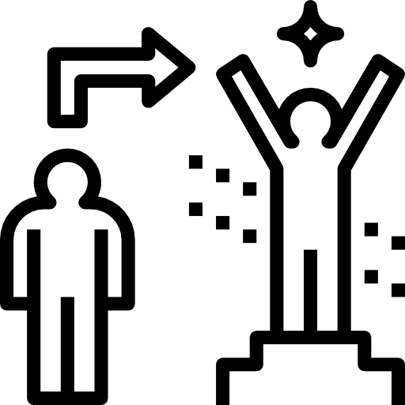

Ansiedade e ruminação
Quando a mente entra em um ciclo de pensamentos repetitivos, é comum sentir que não existe descanso mental. Entenda por que isso acontece e como a terapia trabalha esse padrão.
Ler artigo →

Atendimento online para adultos com ansiedade, autocobrança e padrões emocionais repetitivos com base na TCC e na Terapia do Esquema. Psicóloga há mais de 20 anos.

Sou Carla Villa (Carla Antunes Vilhena), psicóloga clínica há mais de 20 anos, com especialização em Saúde Mental. Trabalho com Terapia Cognitivo-Comportamental (TCC) e sou Terapeuta do Esquema.
Meu objetivo na psicoterapia é ajudar você a se reconectar com quem realmente é, fortalecendo bem-estar emocional, autoconhecimento e confiança para atravessar os desafios da vida com mais leveza e coragem — sem perder de vista a realidade do seu dia a dia.
Meu estilo terapêutico é colaborativo: construímos juntos um caminho de compreensão e mudança. Isso inclui mapear padrões que se repetem (gatilhos, pensamentos, emoções e comportamentos), identificar o que mantém esses ciclos e desenvolver estratégias práticas para transformá-los com consistência.
Desde 2022, realizo atendimentos 100% online, com foco em pessoas que sustentam rotina, trabalho e responsabilidades — mas que, por dentro, convivem com ansiedade, autocobrança, culpa, insegurança e conflitos internos que cansam e se repetem.
Na terapia, buscamos construir mudanças sustentáveis: mais regulação emocional, escolhas mais alinhadas e relacionamentos com menos desgaste, respeitando o seu ritmo e a sua vida real. Atendimento online para brasileiros no Brasil e no exterior.
Às vezes o problema não é falta de força, é excesso de peso interno.
Na terapia, a gente organiza o que está confuso, entende o padrão que se repete e constrói mudanças possíveis na vida real: pensamentos, emoções, escolhas e relacionamentos. Com método, clareza e um ritmo que respeita sua rotina.

 Compreensão do seu padrão (gatilhos, crenças e modos)
Compreensão do seu padrão (gatilhos, crenças e modos)
 Estratégias práticas para regulação emocional e decisões
Estratégias práticas para regulação emocional e decisões

Mudanças consistentes no cotidiano e nos relacionamentosVocê até dá conta da rotina, mas vive cansado(a) por dentro.

Sua mente não desliga: ruminação, antecipação e dificuldade de relaxar sem culpa.
A autocobrança virou o motor — e o custo é ansiedade, irritação ou vazio.
Você repete padrões em relacionamentos (evita conflito, agrada demais, engole emoções) e depois se sente esgotado(a).

Você sente que entende o que acontece, mas na prática não consegue sustentar a mudança sozinho(a).
Meu atendimento é voltado a adultos que desejam compreender e mudar padrões emocionais persistentes — com um processo estruturado, ético e baseado em evidências.
Nota ética: Em caso de crise, risco de autoagressão ou emergência, procure suporte imediato e serviços locais do seu país.
Morar fora pode ser um projeto de vida e também um desafio emocional.
O objetivo é organizar o que está confuso, reduzir sofrimento e fortalecer recursos emocionais.
Atendimento individual, online, com horário agendado.
Reflexões e explicações baseadas na prática clínica sobre ansiedade, autocobrança, padrões emocionais e relacionamentos.
Quando a mente entra em um ciclo de pensamentos repetitivos, é comum sentir que não existe descanso mental. Entenda por que isso acontece e como a terapia trabalha esse padrão.
Ler artigo →A autocobrança pode parecer motivadora, mas muitas vezes se transforma em um ciclo de ansiedade, culpa e exaustão emocional.
Ler artigo →Muitas pessoas funcionam bem na rotina, mas convivem internamente com insegurança e dúvidas constantes sobre seu próprio valor.
Ler artigo →Por que certos conflitos voltam a aparecer nos relacionamentos e decisões da vida? A Terapia do Esquema ajuda a compreender esses ciclos.
Ler artigo →Morar fora pode trazer crescimento, mas também solidão, adaptação cultural e desafios emocionais pouco falados.
Ler artigo →Dificuldade de dizer "não", medo de conflito e excesso de responsabilidade emocional podem gerar desgaste nos vínculos.
Ler artigo →